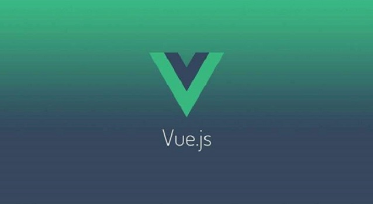

网站首页vue.js
VUE.JS简介
发布时间：2017-08-25 类别：JasonLWY 阅读（30）评论(44)
你可能已经注意到 Vue 组件非常类似于自定义元素——它是 Web 组件规范的一部分，这是因为 Vue 的组件语法部分参考了该规范。例如 Vue 组件实现了 Slot API 与 is 特性。但是，还是有几个关键差别： Web 组件规范仍然处于草案阶段，并且尚无浏览器原生实现。相比之下，Vue 组件不需要任何补丁，并且在所有支持的浏览器（IE9 及更高版本）之下表现一致。必要时，Vue 组件也可以包装于原生自定义元素之内。 Vue 组件提供了纯自定义元素所不具备的一些重要功能，最突出的是跨组件数据流，自定义事件通信以及构建工具集成

Vue.js（读音 /vjuː/，类似于 view） 是一套构建用户界面的渐进式框架。与其他重量级框架不同的是，Vue 采用自底向上增量开发的设计。Vue 的核心库只关注视图层，它不仅易于上手，还便于与第三方库或既有项目整合。另一方面，当与单文件组件和 Vue 生态系统支持的库结合使用时，Vue 也完全能够为复杂的单页应用程序提供驱动。 如果你是有经验的前端开发者，想知道 Vue.js 与其它库/框架的区别，查看对比其它框架。 起步 官方指南假设你已有 HTML、CSS 和 JavaScript 中级前端知识。如果你刚开始学习前端开发，将框架作为你的第一步可能不是最好的主意——掌握好基础知识再来！之前有其他框架的使用经验对于学习 Vue.js 是有帮助的，但这不是必需的。 尝试 Vue.js 最简单的方法是使用 JSFiddle Hello World 例子。你可以在浏览器新标签页中打开它，跟着例子学习一些基础用法。或者你也可以创建一个 .html 文件，然后通过如下方式引入 Vue： script src="https://unpkg.com/vue">/script> 你可以查看安装教程来了解其他安装 Vue 的选项。请注意我们不推荐新手直接使用 vue-cli，尤其是对 Node.js 构建工具不够了解的同学。 声明式渲染 Vue.js 的核心是一个允许采用简洁的模板语法来声明式的将数据渲染进 DOM： div id="app"> {{ message }} /div> var app = new Vue({ el: '#app', data: { message: 'Hello Vue!' } })
Hello Vue! 我们已经生成了我们的第一个 Vue 应用！看起来这跟单单渲染一个字符串模板非常类似，但是 Vue 在背后做了大量工作。现在数据和 DOM 已经被绑定在一起，所有的元素都是响应式的。我们该如何知道呢？打开你的浏览器的控制台（就在这个页面打开），并修改 app.message，你将看到上例相应地更新。 除了文本插值，我们还可以采用这样的方式绑定 DOM 元素属性： div id="app-2"> span v-bind:title="message"> 鼠标悬停几秒钟查看此处动态绑定的提示信息！ /span> /div> var app2 = new Vue({ el: '#app-2', data: { message: '页面加载于 ' + new Date().toLocaleString() } }) 鼠标悬停几秒钟查看此处动态绑定的提示信息！ 这里我们遇到点新东西。你看到的 v-bind 属性被称为指令。指令带有前缀 v-，以表示它们是 Vue 提供的特殊属性。可能你已经猜到了，它们会在渲染的 DOM 上应用特殊的响应式行为。简言之，这里该指令的作用是：“将这个元素节点的 title 属性和 Vue 实例的 message 属性保持一致”。 再次打开浏览器的 JavaScript 控制台输入 app2.message = '新消息'，就会再一次看到这个绑定了 title 属性的 HTML 已经进行了更新。 条件与循环 控制切换一个元素的显示也相当简单： div id="app-3"> p v-if="seen">现在你看到我了/p> /div> var app3 = new Vue({ el: '#app-3', data: { seen: true } }) 现在你看到我了 继续在控制台设置 app3.seen = false，你会发现 “现在你看到我了” 消失了。 这个例子演示了我们不仅可以绑定 DOM 文本到数据，也可以绑定 DOM 结构到数据。而且，Vue 也提供一个强大的过渡效果系统，可以在 Vue 插入/更新/删除元素时自动应用过渡效果。 还有其它很多指令，每个都有特殊的功能。例如，v-for 指令可以绑定数组的数据来渲染一个项目列表： div id="app-4"> ol> li v-for="todo in todos"> {{ todo.text }} /li> /ol> /div> var app4 = new Vue({ el: '#app-4', data: { todos: [ { text: '学习 JavaScript' }, { text: '学习 Vue' }, { text: '整个牛项目' } ] } })
学习 JavaScript 学习 Vue 整个牛项目 在控制台里，输入 app4.todos.push({ text: '新项目' })，你会发现列表中添加了一个新项。 处理用户输入 为了让用户和你的应用进行互动，我们可以用 v-on 指令绑定一个事件监听器，通过它调用我们 Vue 实例中定义的方法： div id="app-5"> p>{{ message }}/p> button v-on:click="reverseMessage">逆转消息 button> /div var app5 = new Vue({ el: '#app-5', data: { message: 'Hello Vue.js!' }, methods: { reverseMessage: function () { this.message = this.message.split('').reverse().join('') } } }) Hello Vue.js! 逆转消息 注意在 reverseMessage 方法中，我们更新了应用的状态，但没有触碰 DOM——所有的 DOM 操作都由 Vue 来处理，你编写的代码不需要关注底层逻辑。 Vue 还提供了 v-model 指令，它能轻松实现表单输入和应用状态之间的双向绑定。
关键字 :
- vue.js
- 框架
- 路由原理